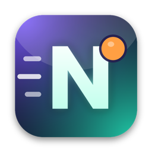

A reminder you can't miss and don't mind. An animated 3D character walks into the window you're working in and tells you what to do.
The reminder shows up in the window you're actually using, including full-screen apps and other Spaces, without stealing focus.
Mark it done, snooze it, or just type "after lunch" or "friday 5pm" to reschedule in plain language.
Pick a character and a voice style (calm coach, sarcastic friend, sports commentator, movie hero). Reminders can be spoken aloud.
Type a reminder in everyday words, set it to repeat, or paste a messy brain dump and let Nudge pull out the tasks and times.
Bring in events from Google Calendar or an ICS calendar link.
Lives in the menu bar (Mac) or system tray (Windows), works offline, and keeps your reminders on your computer in ~/.nudge/ (%USERPROFILE%\.nudge on Windows).
You can add your own .glb 3D models by placing them in ~/.nudge/characters.
xattr -dr com.apple.quarantine /Applications/Nudge.app
Optional AI wording: open Settings from the menu bar or tray icon and add an Anthropic API key to get freshly written reminder messages. Without a key, Nudge uses its built-in wording.
39bebee3e57b20a86f43ddfc77053d16433e264650f586829bb2a6d959212b86shasum -a 256 ~/Downloads/Nudge-1.0.0.dmgbc1889e8b133d2553642be24a3070bac28676d90dab03e72fe296f8009d78996Get-FileHash $HOME\Downloads\Nudge-1.0.0.exe -Algorithm SHA256~/.nudge/ (%USERPROFILE%\.nudge on Windows). Delete that folder to remove everything.